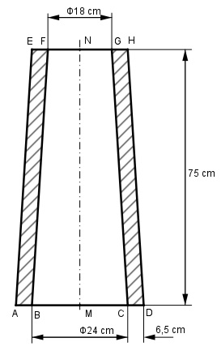

Aufgabe 268 Wie viel wiegt der Schornstein, wenn seine Dichte 1,8 kg/dm³ beträgt?  Äußeres Kegelstumpfvolumen: r1 = BC/2 + 6,5 cm = 24 cm/2 + 6,5 cm = 18,5 cm r2 = FG/2 + 6,5 cm = 18 cm/2 + 6,5 cm = 15,5 cm MN Vaußen = ----- * (r1² + r1 * r2 + r2²) m³ 3 75 Vaußen = ----- * (18,52 + 18,5 * 15,5 + 15,5²) cm³ 3 Vaußen = 21 731 cm³ = 21,73 dm³ Inneres Kegelstumpfvolumen: r1 = BC/2 = 24 cm/2 = 12 cm r2 = FG/2 = 18 cm/2 = 9 cm MN Vinnen = ----- * (r1² + r1 * r2 + r2²) m³ 3 75 Vinnen = ----- * (122 + 12 * 9 + 9²) cm³ 3 Vinnen = 8 325 cm³ = 8,325 dm³ m = (Vaußen - Vinnen) * р m = (21,73 dm³ - 8,325 dm³) * 1,8 kg/dm³ = 24,1 kg